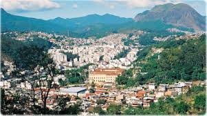

Nova Friburgo
Nova Friburgo é um município localizado na região serrana do estado do Rio de Janeiro, conhecido por suas belas paisagens naturais, clima ameno e rica herança cultural. Fundada em 1818 por colonos suíços, a cidade preserva tradições europeias que se misturam à cultura brasileira, criando uma identidade única e acolhedora.
Cercada por montanhas, rios e áreas de Mata Atlântica, Nova Friburgo é um importante destino turístico, atraindo visitantes em busca de ecoturismo, aventura e contato com a natureza. Entre seus atrativos estão trilhas, cachoeiras, mirantes e parques naturais, além de uma gastronomia diversificada e eventos culturais que movimentam a cidade ao longo do ano.
Reconhecida também como um dos principais polos de moda íntima do Brasil, Nova Friburgo possui uma economia dinâmica que combina indústria, comércio, turismo e agricultura. Sua infraestrutura, aliada à qualidade de vida e ao ambiente tranquilo, faz da cidade um local atrativo tanto para moradores quanto para turistas.
Com sua combinação de belezas naturais, tradição histórica e desenvolvimento econômico, Nova Friburgo destaca-se como uma das cidades mais encantadoras da serra fluminense, oferecendo experiências memoráveis a todos que a visitam.